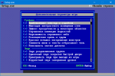

 Дополнительные параметры геймплея
Раздел дополнительных параметров игры позволяет произвести тонкую настройку дополнительных эстетических и визуальных игровых улучшений.
Графика
- Брайтмаппинг текстур и спрайтов. Подсветка некоторых областей у спрайтов и текстур.
- Имитация констрастного освещения стен. Также известна как "fake contrast". Крайне необходима для низкой детализации экрана, для более четкого различия граней стен. При высокой детализации такая контрастность делает картинку менее симпатичной, от того и выключена по умолчанию.
- Эффект прозрачности у некоторых объектов. Добавляет крайне не броскую и аккуратную прозрачность для некоторых спрайтов (фаерболы, вспышки и т.п.).
- Улучшенная анимация жидкостей. Вместо покадровой анимации, текстуры жидких поверхностей будут иметь симпатичную пиксельную анимацию.
- Неуязвимость окрашивает небо. При получении сферы неуязвимости, белыми инвертированными цветами будет окрашиваться и небо.
- Разноцветная кровь и трупы. У Какодемонов будет синяя кровь, у Рыцарей и Баронов Ада зелёная. Этот эффект также распространяется на окрашенность трупов, раздевленных прессом или дверью, и дополнительно на цвет мёртвых морпехов.
- Красная вспышка воскрешения монстров. На "кошмарной" сложности игры монстры будут возрождаться с тёмно-красной вспышкой, а не стандартной зелёной, используемой для эффекта телепора.
- Элементы меню и тексты отбрасывают тень. - текстовые и некоторые другие элементы меню будут отбрасывать однопиксельную тень.
- Показывать значок дискеты. Индикатор дисковой активности. Значок будет отображаться при первом воспроизведении и кэшировании звуковых событий.
Звук
- Звук раздавливания трупов. При раздавливании трупа дверью или прессом будет проигрываться звук.
- Одиночный звук закрытия быстрой двери. Исправление незначительного бага оригинального Doom для DOS.
- Проигрывать звук при выходе из игры. В случае отключения, выход из игры будет значительно ускорен.
- Корректный звук завершения уровня. При активации кнопки/переключателя будет слышан другой звук, изначально запланированный в исходных кодах игры.
Тактика
- Отображать статистику уровня на карте. Отображение статистики убитых монстров, обнаруженных тайников и полученных предметов. Дополнительно отображается время, проведенное на уровне.
- Уведомление об обнаружении тайников. Текстовое и звуковое уведомление при обнаружении тайников.
- Отображать отрицательное здоровье. Сделает возможным отображение сверх-урона при смерти игрока. Нижний предел: -99%.
- Инфразеленый визор усиления освещения. Визор будет работать также, как он работал в Doom Press Release Beta.
Физика
- Игрок может проходить под и над монстрами. Возможность проходить под и над монстрами, недоступная в оригинальном Doom. Не распространяется на декорации.
- Трупы соскальзывают с выступов и обрывов. Если центр массы убитого монстра находится в воздухе, труп будет плавно соскальзывать.
- Покачивание оружия при стрельбе в движении - оружие будет покачиваться с уполовиненной амплитудой, а также будет активирована уникальная амплитуда для бензопилы.
- Двуствольное ружье может разрывать врагов. При выстреле в упор в зомби, зомби-сержантов и бесов из двуствольного ружья, будет шанс что их тела разорвёт на куски.
- Произвольное зеркальное отражение трупов. Спрайты трупов врагов и анимация их смерти будет произвольно "зеркалироваться" по горизонали. Действует не на все объекты.
- Левитирующие сферы-артефакты. Сферы невидимости, неуязвимости, сверхзаряда, а также мегасфера будут плавно вертикально покачиваться, наподобие игре Heretic, но с той лишь разницей, что амплитуда сокращена до 1/3.
Геймплей
- Исправлять ошибки оригинальных уровней. Исправление незначительных ошибок и недочетов уровней, таких как отсутствующие текстуры, предметы за пределами уровня и корректировка некоторых горизонтальных и вертикальных координат текстур. Также исправляет "незасчитываемые" тайники в Doom и Doom 2, давая возможность честно завершить любой уровен со 100%-ой статистикой врагов/предметов/тайников.
- Зеркальное отражение уровней. Игровые уровни будут как бы в зеркальном отражении. Зеркалирование безопасно для сохранений, например, если начать игру в обычном режиме, сохранить её, и загрузить сохранение в зеркальном режиме, всё будет работать должным образом.
- Корректная формула "Ouch Face". При получении урона в более 20 единиц, лицо главного героя будет принимать другое выражение лица, нежели чем при получении обычного урона.
- Элементаль Боли без ограничения душ. Расширение лимита оригинальной игры с 20 до 10240 душ.
- Повышенная агрессивность Потерянных душ. Комплексное исправление трех оригинальных багов игры. Рекоммендуется исключительно для ознакомления.
- Не выводить запрос при быстрой загрузке. После выбора слота быстрого сохранения, по нажатию кнопок быстрой записи и загрузки (F6 и F9) подтверждающий запрос выводиться не будет.
- Не проигрывать внутренние демозаписи. Отключение автоматического проигрывания демозаписей DEMO1, DEMO2, DEMO3 и DEMO4 (только для Ultimate Doom), в загруженном IWAD или PWAD.
Прицел
- Отображать прицел. Отображение прицела-перекрестия.
- Индикация здоровья. Прицел будет окрашиваться относительно здоровья игрока:
- 67 и выше: зеленый
- 34 - 66: желтый
- 33 и ниже: - красный
- Увеличенный размер. Двоекратное увеличение прицела.
|
{kind=link}